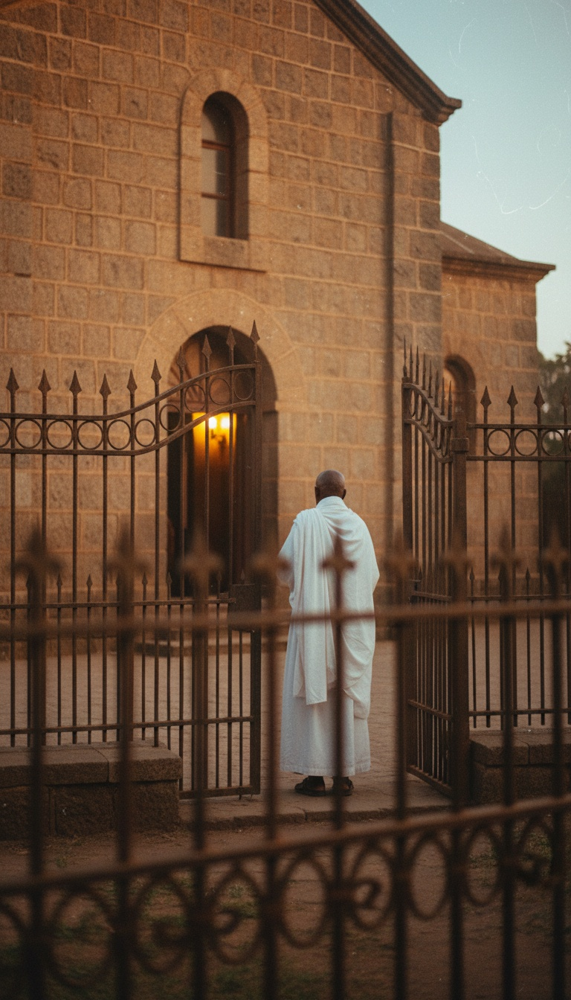

The Ark of the Covenant is in Axum, Ethiopia, and one monk on earth is permitted to stand in the room with it.
The Ethiopian Orthodox Tewahedo Church has said so in writing since the fourteenth century. The guardian is chosen for life, sleeps inside the compound of the Church of Our Lady Mary of Zion, and never leaves it. Emperors, patriarchs and foreign governments have asked to see the object. Every one of them was turned away at the chapel fence.

The chapel nobody enters
Emperor Haile Selassie built the Chapel of the Tablet in 1965, a squat granite box behind an iron fence in the church compound at Axum, in Tigray, and moved the Ark into it from the older church that Emperor Fasilides raised in 1665. Queen Elizabeth II toured the compound in February 1965. She was shown the courtyard. She was shown the fence. She was shown nothing else.
The guardian's title passes only at death. The dying keeper names his successor, the church confirms him, and from that day he stays within the walls, prays before the Ark and burns incense in front of it. Graham Hancock met the guardian in 1983 and printed the conversation in The Sign and the Seal in 1992. Paul Raffaele got as far as the fence for Smithsonian magazine in December 2007 and was told through an intermediary that the Ark would be shown to no one. In June 2009 the Patriarch of the church, Abuna Paulos, told reporters in Rome that he would reveal the Ark to the world, and within twenty-four hours the church in Addis Ababa withdrew the statement. A patriarch does not get overruled about an empty box.
The road out of Jerusalem
The Kebra Nagast, the Glory of the Kings, gives the route. Menelik the First, son of Solomon and Makeda, the Queen of Sheba, visited his father in Jerusalem, and the firstborn sons of the priests who escorted him home carried the Ark out of the Temple and south through Egypt to the Ethiopian highlands. The book was compiled in Ge'ez around 1320 by Yeshaq, the Nebura'ed of Axum, from older Coptic and Arabic sources it names on its own pages.
The British took two manuscripts of it from Emperor Tewodros's fortress at Magdala in 1868. Emperor Yohannes IV wrote to the British Museum in 1872 and said that without the book his people would not obey him, and the trustees sent one copy back. A nation does not beg for a fairy tale.
Ethiopian tradition places the Ark for eight centuries on the island of Tana Qirqos in Lake Tana, where the monks still point to the stone altar the priests from Jerusalem used, before it was carried to Axum. When Ahmad ibn Ibrahim al-Ghazi burned Axum in 1535, the Ark had already been moved out of the city, and it came home after his death. The keepers have moved it before and they know how.
The spec sheet in Exodus
Exodus 25 gives a builder's drawing. Acacia wood, two and a half cubits long, a cubit and a half wide and high. Overlaid with pure gold inside and out. Four gold rings at the feet, two poles of acacia sheathed in gold, and the poles never to be removed. On top, a lid of solid gold, and on the lid, two cherubim of hammered gold facing each other with their wings stretched over the cover. Then the line that matters, Exodus 25:22: "There I will meet with you, and from above the mercy seat, from between the two cherubim, I will speak with you."
The handling rules are stricter than the build. Numbers 4:15 says the Kohathites carry it on the poles and must not touch the holy things or they die. Numbers 4:20 says they must not go in to look at it even for a moment or they die. Exodus 28:42 dresses the priests in linen from the waist down.
The design has a cousin in the Grand Egyptian Museum outside Cairo. Howard Carter pulled a gilded shrine of Anubis from the tomb of Tutankhamun in 1922, a gold-covered wooden box on carrying poles with a god on the lid, catalogue number JE 61444. Moses was raised in the Egyptian court. He built what he had seen carried in procession, and he added a warning label.
The body count
The Philistines captured the Ark at Aphek and took it to Ashdod, 1 Samuel 5. By morning the statue of Dagon lay face down before it. The next morning Dagon's head and hands were broken off on the threshold. The people of Ashdod broke out in tumors. They sent it to Gath, and Gath broke out in tumors. They sent it to Ekron, and Ekron cried out that it was killing them. Seven months, three cities, one box.
The Philistines put it on a new cart behind two milk cows and let the cows walk. The cows went straight up the road to Beth Shemesh and stopped at a great stone in the field of Joshua, 1 Samuel 6:14. In 2019 Shlomo Bunimovitz and Zvi Lederman of Tel Aviv University excavated a twelfth-century BCE temple at Tel Beth Shemesh and found a massive dressed stone table at its centre, sitting where the text puts the great stone. The men of Beth Shemesh looked into the Ark. 1 Samuel 6:19 counts the dead at seventy.
Then David moved it toward Jerusalem on a cart, 2 Samuel 6. At the threshing floor of Nachon the oxen stumbled, a man named Uzzah put out his hand to steady the Ark, and he died where he stood. David was so afraid he left it in the house of Obed-Edom for three months before he tried again, this time on poles carried by Levites, with sacrifices every six steps.
Uzzah reached out with a bare hand, touched gold, and was dead before the oxen finished stumbling.
What the box actually is
Two sheets of gold separated by a layer of dry acacia wood is a capacitor. Pieter van Musschenbroek built the first one in Leiden in 1745, a glass jar with metal inside and out, and it knocked him to the floor when he touched the terminal. Erich von Daniken pointed at the Exodus drawing in Chariots of the Gods in 1968 and named it. The cherubim on the lid are the terminals. The gap between their wings is the spark gap. The voice that spoke from between the two cherubim spoke from exactly the place a discharge would arc.
Every handling rule now reads as engineering. Poles that never leave the rings keep the carriers insulated from the plates. Linen holds far less static charge than wool. A veil goes over the lid before anyone approaches, Numbers 4:5. The men who die are the ones who break protocol: Uzzah grounded it with a bare hand, the men of Beth Shemesh opened it, and Nadab and Abihu carried unauthorised fire before it in Leviticus 10 and were burned to death on the spot.
Edward Ullendorff, later Oxford's professor of Ethiopian studies, told the Los Angeles Times in 1992 that as a British officer in 1941 he walked into the old church at Axum and saw a plain wooden box of medieval workmanship. He walked into the church that Fasilides built. The Chapel of the Tablet was still twenty-four years away, and every Ethiopian church keeps a consecrated tabot in its inner sanctuary, which is exactly what a soldier with no escort would have been shown. The keepers hid the Ark from a sultan's army in 1535. A lieutenant in boots got no closer than the sultan.
The war came to the gate
In late November 2020 Eritrean soldiers entered Axum during the Tigray war and killed hundreds of civilians in the streets and in the church compound. Amnesty International published the account on 26 February 2021 under the title The Massacre in Axum, built on interviews with forty-one witnesses. Deacons told reporters that townspeople ran to Mary of Zion because they believed the soldiers had come for the Ark. The guardian stayed at his post and the Ark stayed behind the fence.
Jerusalem has had nothing to show since Nebuchadnezzar burned the Temple in 587 BCE. Second Maccabees 2 says Jeremiah hid the Ark in a cave on Mount Nebo, and no cave on Nebo has ever produced it. The Copper Scroll from Qumran, found in 1952 and now in the Jordan Museum in Amman, lists sixty-four treasure caches and none has yielded it. Israel Finkelstein and Thomas Romer dug the Ark's last recorded resting place at Kiriath-jearim from 2017 to 2019 and found an eighth-century platform with nothing on top. Every place the Ark should be is empty. One place on earth still claims it, guards it and refuses to show it.
The guardian who spoke to Hancock in 1983 is dead. The guardian who refused Raffaele in 2007 is dead. The man who holds the title tonight will die inside that fence and name the next man with his last breath, the way it has been done since before the Kebra Nagast was written down. Whatever sits in the Chapel of the Tablet has been protected by a chain of single witnesses for seven hundred years, and it was carried out of a temple where it had already killed the men who mishandled it.
A church does not chain a man for life to a replica. It chains him to something it is afraid to lose and afraid to open. Exodus wrote the manual, Samuel wrote the accident reports, and Axum kept the machine. The question nobody in Ethiopia will answer is the only one left: when the last charge went in, and what the guardian hears at night from between the two cherubim.
Before you go
7 books the Vatican doesn't want you reading. Free PDF — the texts they cut, with sources. Joined by 140+ Inner Circle members.
No spam. Unsubscribe anytime.
Go deeper
The Hidden Canon, Vol. I — Enoch. Jubilees. Thomas. Mary. Judas. 90 pages, 14 chapters, every receipt cited. The books your Bible quietly removed.
Read the Canon →Books that informed this investigation
As an Amazon Associate, Hidden Epoch earns from qualifying purchases. Cost to you: nothing.
Research safely
The VPN we use to research without being tracked. First 3 months free.
Get NordVPN →